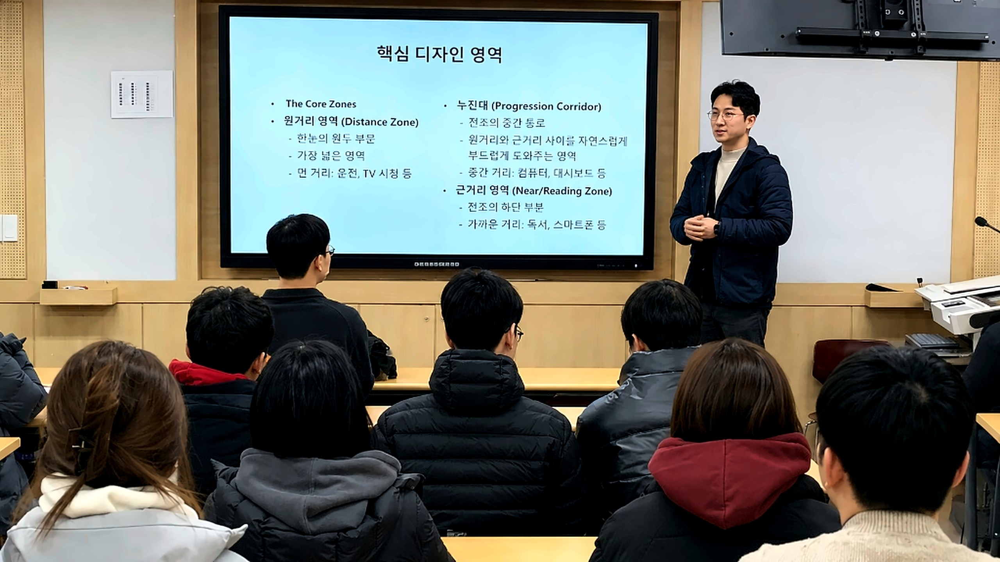
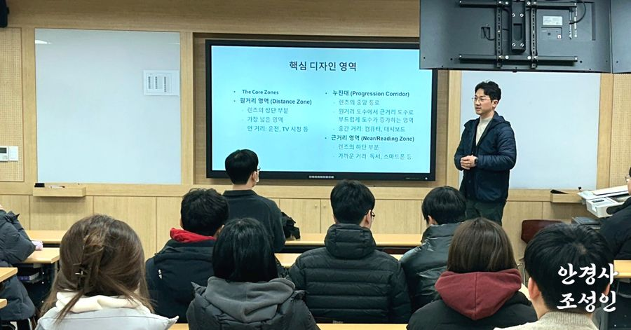
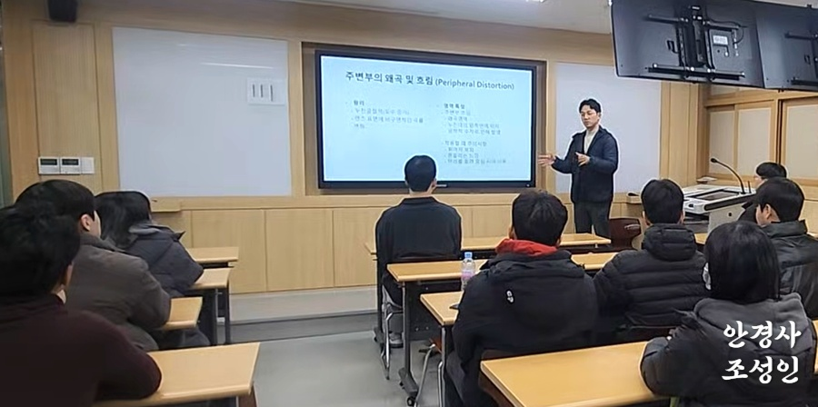

20년간 오직 한 가지, 정확하고 편안한 안경만을 연구해온 임상 전문가입니다.

"안경을 맞추고 나서도 불편했던 적이 있으시다면, 그건 안경의 문제가 아니라 검안의 문제입니다. 저는 처방 하나하나에 20년의 임상 경험을 담습니다."
보건대학교 특강 교수로 활동하며 미래의 안경사들에게 임상 지식을 전수하는 동시에, 안경원에서는 고객 한 분 한 분에게 그 전문성을 그대로 적용합니다.
누진다초점 렌즈 처방·설계, 정밀검안 기법을 안경광학과 학생들에게 강의. 최신 임상 사례와 검안 이론을 접목한 실무 중심 교육을 담당하고 있습니다.
국제 기준의 시기능 검사 전문 과정. 단순 굴절 검사를 넘어, 양안시 기능·조절력·폭주력까지 통합적으로 평가하는 체계적 검안 능력을 갖추었습니다.
단순 착용감을 넘어 광학 성능까지 고려하는 정밀 피팅 전문 과정 수료. 프레임별 광학 중심 최적화, 부등상 교정 피팅 등 고급 기술을 보유하고 있습니다.
폐안식 검사와 달리, 두 눈을 동시에 개방한 상태에서 실제 생활 환경과 가장 유사한 조건으로 굴절 검사를 수행합니다. 사위, 조절 과부하 등 폐안식 검사에서 놓치기 쉬운 요소까지 정밀하게 평가합니다.
가장 까다로운 렌즈로 알려진 누진다초점을 20년간 6,000건 이상 처방·제작한 풍부한 임상 경험. 라이프스타일별·직업별 맞춤 누진 설계를 제공합니다.
어린이·청소년의 근시 진행을 늦추는 마이오피 컨트롤 렌즈 처방 전문가. 브랜드별 억제 렌즈를 보유하고, 정기 시력 모니터링을 통해 지속적으로 관리합니다.

핵심 디자인 영역 — Distance & Progressive Zone 디자인 강의
주변부 왔곡 — Peripheral Distortion 강의미래의 안경사를 교육하는 특강 교수로서, 최신 임상 사례와 검안 이론을 실무에 접목한 강의를 진행합니다. 안경원 고객에게 제공하는 서비스의 질은 바로 이 강의 수준에서 출발합니다.
학생들에게 누진다초점 렌즈의 원리, 설계 방식, 실제 처방 절차를 체계적으로 가르칩니다. 이론과 임상 케이스를 병행하는 실무 중심 교육입니다.
단순 시력 검사를 넘어, 양안시 기능 전반을 평가하는 고급 검안 기법을 강의합니다. 사위, 조절 이상, 폭주 부족 등 복잡한 케이스 처리 능력을 교육합니다.
실제 안경원에서 발생하는 다양한 케이스를 분석하고, 최적의 해결책을 토론하는 방식으로 미래 안경사들의 임상 판단력을 키웁니다.